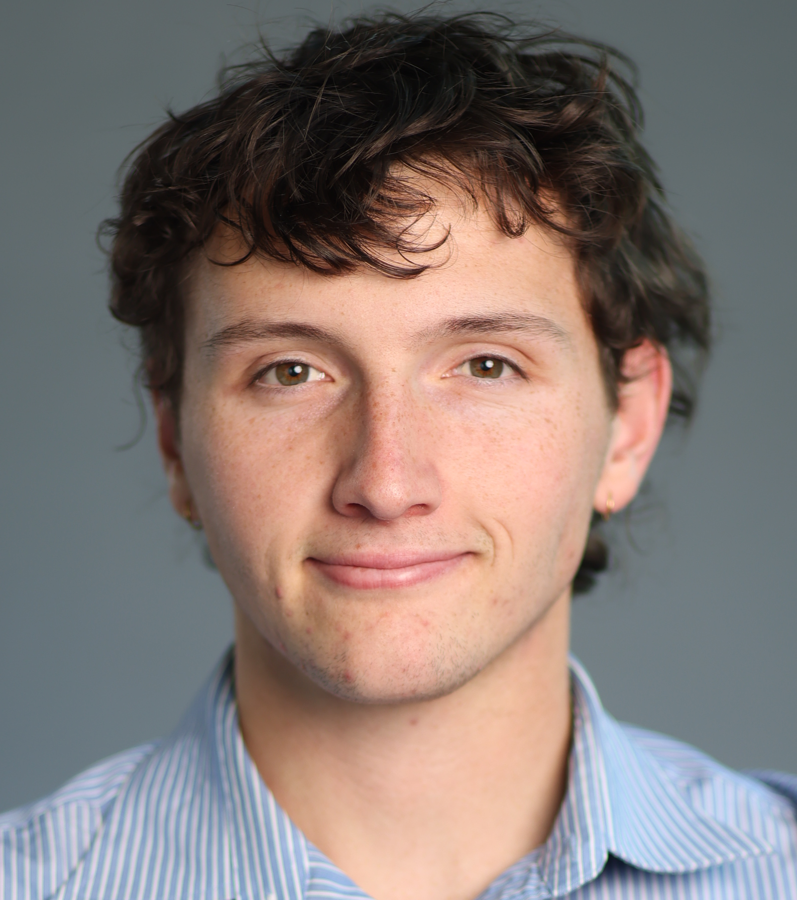
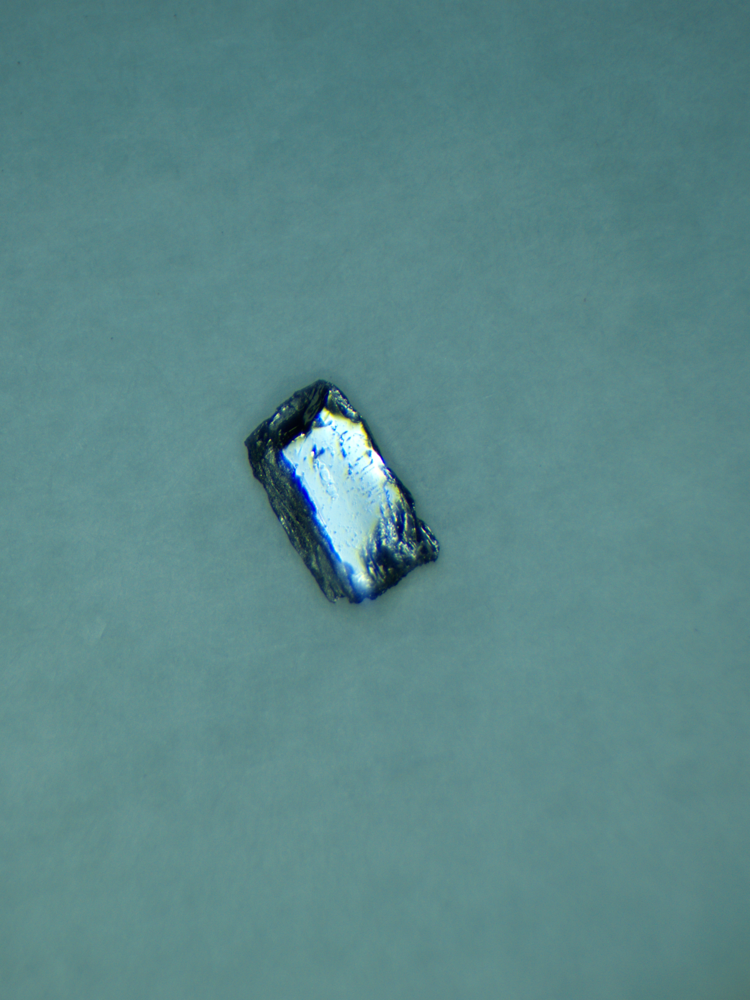
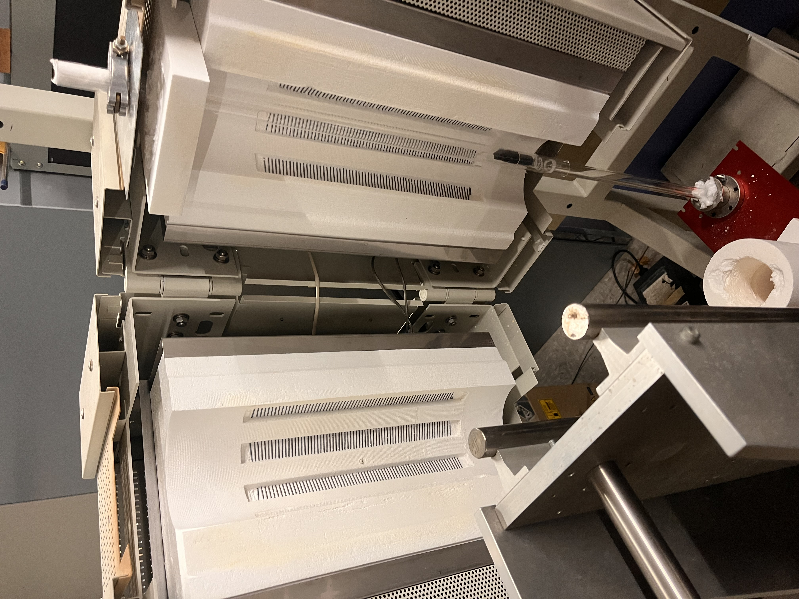

Home

Hello! I am a 4th-year undergraduate at UC Santa Cruz studying Physics. This site is a hub for my research interests and projects, publications, presentations, and teaching projects. I was born and raised in Oakland, CA. I love watching and playing soccer, my team is Arsenal FC COYG! I also love cooking and baking. I am always up for a good cookie recipe.
Current Research Interests
- Adaptive optics / thin-shell optics fabrication & Astronomical Instrumentation
- Condensed Matter Instrumentation: crystal growth techniques
- Semiconductors and Photovoltaics
- Physics education tools and curriculm development
Quick links
- Publications (papers & preprints)
- Presentations & talks (slides/posters)
- Contact (email & profiles)
Research
Summaries and descriptions of ongoing and recent work.
Adaptive optics / thin-shell optics
My main research project in undergrad revolved around the development of new fabrication techniques for thin glass face sheets. The process, called free‑form slumping, aims to reduce the cost and fabrication time of large mirrors for adaptive optics projects. The process, in summary, takes already thin sheets of glass, supporting them by their outer annuli and heating them. This allows the glass to defrom "slump" into the parabolic mirror shapes we desire. We are also looking to adapt and pioneer surface metrology and analysis tooling for optics projects like this.


BiTeI & Bridgman Growth
This project has aimed to develop a new growth technique for the Baumbach lab group. For this, I built a Bridgman crystal growth chamber. A Bridgman crystal growth is a dynamic growth technique where the sample is physically pulled through a temperature gradient. In our case, the furnace is oriented vertically, and using a linear translator and a stepper motor, we can pull the sample through the heating elements. I developed the physical components of this project, including building a driver and microcontroller circuit for the stepper motor, so we can precisely control the speed at which and the time the sample spends in the chamber. With this setup, we grew a possible photovoltaic material Bizmuth tellurium Idonine (BiTeI), showcasing the technique's ability to grow large single crystals. characterization, and measurements connected to Rashba spin splitting and optoelectronic effects.


links: Presentation
Physics education tooling
Working with Professor Amy Fruniss, I developed a visualization tool for our introductory mechanics course. Scaffolded learning has become the new norm for introductory course design. Professor Furniss developed a set of scaffolded learning objectives to build her introductory courses around. With this project, I took these objectives and turned them into an interactive learning tool where students can physically interact with the course concepts, visualizing how they are connected and build on each other. Furthermore, I employed a proximity node and connection system that allows students to plot revision pathways back through learning modules for concepts they are struggling with.


links: Learning map demo • repo • Poster
Publications
Journal articles & proceedings
- Development of free-form slumping techniques for thin glass facesheets Jackson E. Falk, Philip M. Hinz, R. Deno Stelter, Matt Radovan, Daren Dillon Jackson E. Falk, … J. Astron. Telesc. Instrum. Syst. 11(4), 044005 , (2025) doi: 10.1117/1.JATIS.11.4.044005 · PDF
- Developments of an empirical approach for free form slumping of large thin shells Jackson E. Falk, Phillip Hinz, Deno Stelter, … Proc. SPIE 13624, Astronomical Optics: Design, Manufacture, and Test of Space and Ground Systems V, 136241A (18 September 2025) https://doi.org/10.1117/12.3064122 · PDF
- Progress on creating thin curved glass face sheets for deformable mirrors via free-form slumping Hinz, P. M., Falk, J., Stelter, R. D., Radovan, M., Dillon, D, Advances in Optical and Mechanical Technologies for Telescopes and Instrumentation VI (Vol. 13100, pp. 284-294). SPIE https://doi.org/10.1117/12.3020762 · PDF
Preprints
- None at the moment!
Presentations & Talks
Posters, conference talks, and outreach.
-
Development of free-form slumping techniques for fabricating adaptive secondary face sheetsOral presentation, SPIE Optics + Photonics 2025 - San Diego Convention Center, CA — 6 August 2025
-
Synthesis and characterization of BiTeI single crystals using the Bridgman growth methodOral presentation, 2025 Annual Meeting of the APS Far West Section - Stevenson Event Center, UC Santa Cruz, CA — 11 October 2025SlidesDevelopment of pedagogical tools like a directional map of learning for introductory physicsOral presentation, 2025 Annual Meeting of the APS Far West Section - Stevenson Event Center, UC Santa Cruz, CA — 11 October 2025
Teaching
Teaching experience, mentoring, sections led, and materials.
Teaching Experince
- 11th/12th Grade Physics (Santa Cruz High School) — Spring Semester - Student Teacher — E & M
- 9th/10th Grade Physics (Harbour High School) — Fall Semester - Student Teacher — Waves and Optics
- 8th Grade Science (El Susual Middle School) — Summer - Student Teacher — Geology and Earth Science
- UCSC Pedgogy Book Club
- SPS Peer Mentoring
- Building Physics education tools like interactive learning maps
Resources
Teaching
Teaching experience, mentoring, sections led, and materials.
Contact and CV
- CV link
- Email: jacksonefalk@gmail.com
- GitHub: github.com/jefalk
- Google Scholar / ORCID / LinkedIn: add links